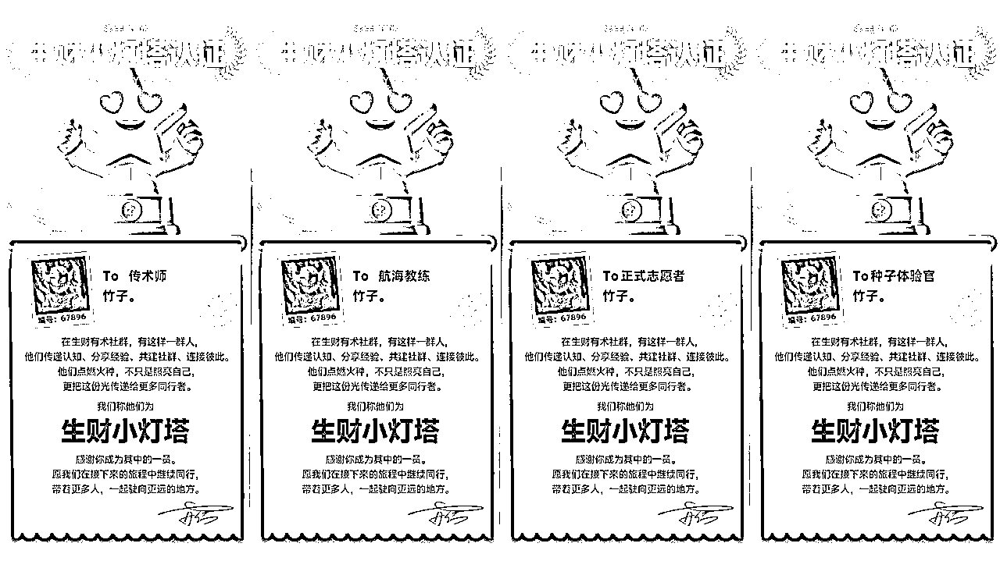
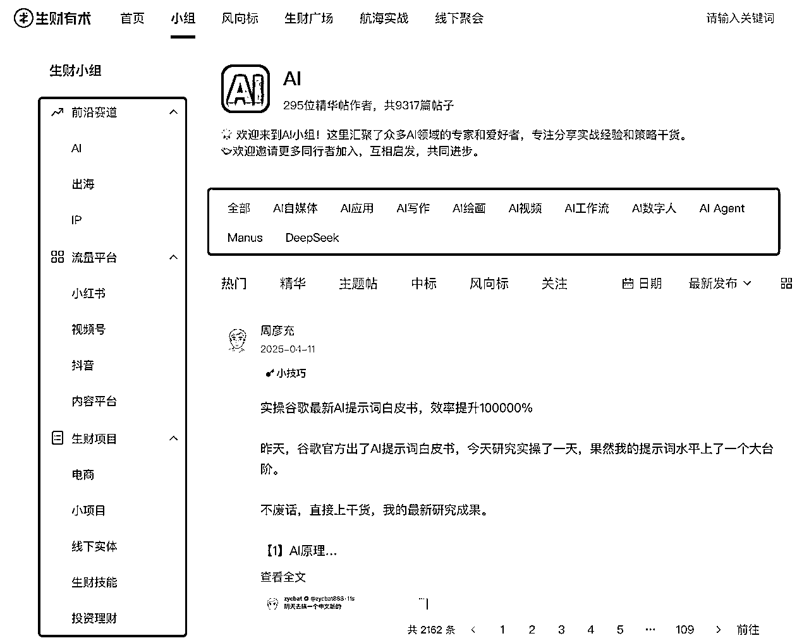
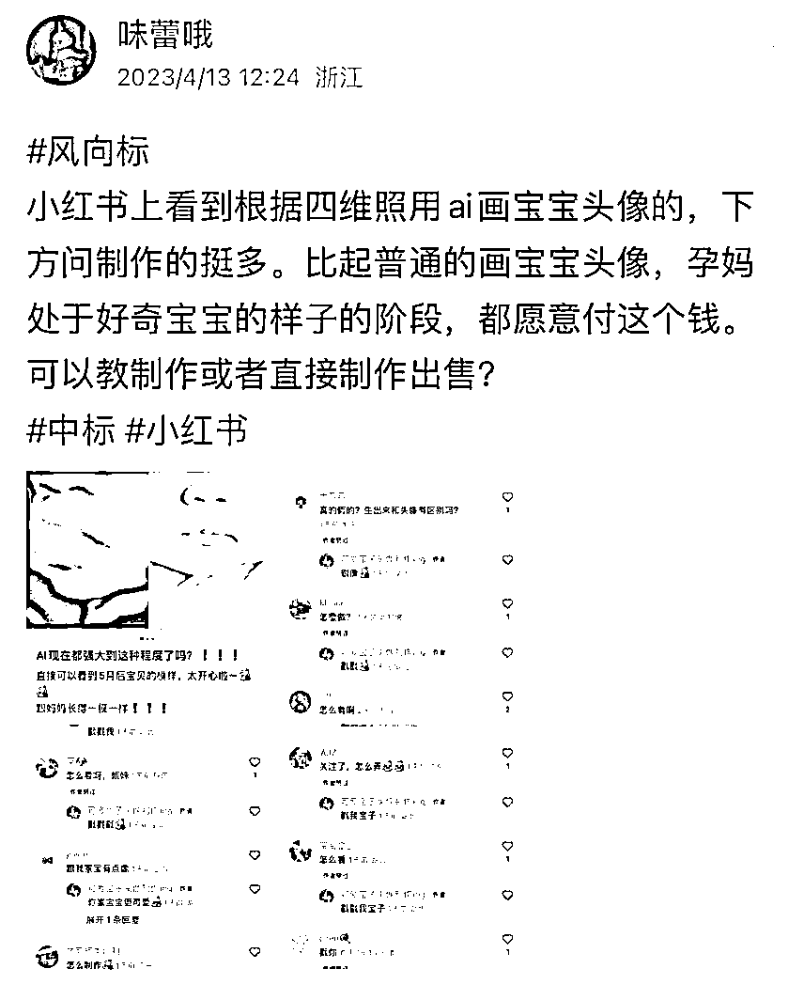
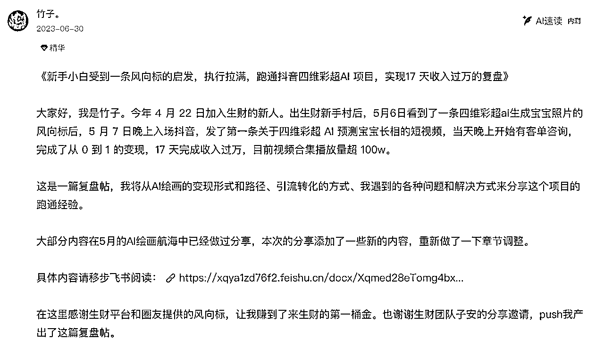
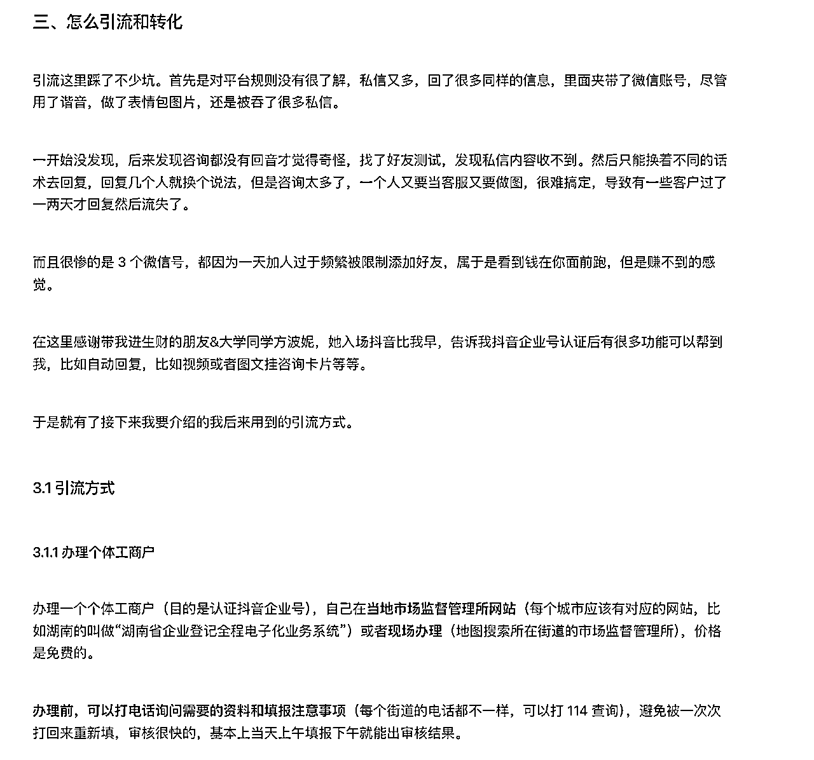
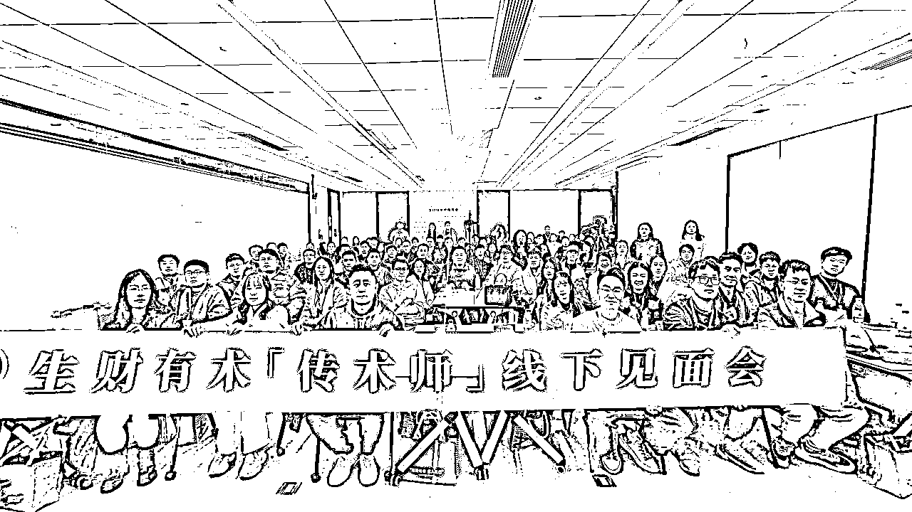

来源：https://xqya1zd76f2.feishu.cn/docx/X7lFdr3Hro43mqxqf0YcM3gOn5U
大家好，我是湖南长沙的圈友竹子。
目前是自由职业，是一位AI自媒体博主，也在做YouTube AI内容出海。
我是2023年418的时候加入的生财有术，加入之后从失业人员到一年能赚个10w➕。
虽然和很多大佬比起来不算多，但是在加入之前，我是没做过任何副业，刚刚因为公司业务调整“被失业”的纯互联网搞钱小白，现在可以不靠打工也能养活自己了，我觉得还挺开心～
最重要的是，我觉得自己的商业思维提升了很多，让我有底气这辈子不上班也饿不死啦哈哈！谢谢生财搞钱大学。
加入生财两年，即将开启第三年，参加了16次航海，做了5次志愿者，一次领队，一次航海教练，和大家分享一下我加入生财后的一些心态转变和自己的生财使用指南，如果能帮到你的话，那真是太开心辣！

适用于刚加入生财不知道如何选择项目，以及想成为自由职业者的人群，能解决你关于信息焦虑、项目选择困难的卡点。分为以下几个步骤:
1.平常心面对信息焦虑，觉得信息太多太杂的时候，可以讲生财当作搜索引擎，或者固定时间浏览。
2.新手现在自己的技能点附近选择项目，也可以从预期结果倒推路径去选。
3.项目从0到1后，多多思考如何放大从1到10，从10到100。
4.多分享自己的经验，会有惊喜等你。
接下来展开聊聊～
我猜大部分小伙伴加入生财的第一感觉就是——
——卧槽？这也能赚钱？
——信息太多了吧，看不完，根本看不完……
——完了完了，越看越焦虑……根本不知道自己适合什么项目，到底从哪开始……
如果你也有这样的感觉，其实是一件好事，因为你开始刷新自己的认知了，开始学习很多你原本没接触过的知识了。
我知道你很焦虑，但是你先别焦虑（废话文学），因为这太正常了，你不是一个人哈哈！
我刚进生财的时候也是这样，拿了3天体验卡，看了一大堆帖子，觉得真是开眼了，那些我本来只用来娱乐消遣的平台，居然都有这样那样的赚钱办法。
更要命的是，我都想尝试，又不知道到底哪个适合自己。体验的那几天我甚至兴奋到睡不着觉，啥也还没干但是脑海里已经是自己年入百万的场景了哈哈哈。
反正咱们已经来到了生财大学，就调整心态，反正一口吃不成胖子，咱一步一步来～
调整信息爆炸的方式，我自己常用的方式有两个：
我们平时在平台刷内容，和在搜索引擎里搜索内容，有一个很大的区别，就是前者你会漫无目的的刷平台大数据给你推荐的内容，后者是你有目的的去搜索你想要的东西。
刷生财帖子也是一样的，你可能没法在短时间内读完生财里所有的帖子，但是你可以直接去搜索你想做的项目相关的帖子，这样能够更快的帮助你掌握这个项目的信息。
特别是生财有术的官网现在按小组分好类了，更容易找到你想要的内容：

当然，咱也不是说别的内容就完全不看了，如果你每天有阅读输入的时间，比如睡前一小时，你可以用这个时间来浏览一下今天的风向标，找一篇你感兴趣的精华帖看看，每天看1篇，一年也有365篇啦！
接下来就是选择项目，刚接触互联网搞钱的小伙伴，最纠结的就是不知道哪个适合自己，哪个能赚到自己预期的收入。
我想分享几个我的经验：
包括自己常用的平台，自己想学的东西哪些是可以短时间内能得到提升的。
比如说，我刚进生财的时候，虽然我是一个互联网搞钱小白，但是多年的工作经验，我还是有一些基础技能在的，然后我列出了一些能力：
-外企工作过，有英语能力
-会剪视频
-会做图文设计
-平时用小红书用的多
-刚生完孩子，是不是可以和母婴或者育儿相关？
然后结合目前的能力，看看哪些是我能够立即去尝试的？比如我当时就觉得，小红书英语启蒙类的虚拟资料我应该可以试试，就去看了很多相关的帖子，了解到可以用资料引流，一方面资料可以卖钱，另一方面引流到微信或许还能做母婴类的团购。
这个就是我的初步设想。接下来就可以去验证是否能实现了，准备资料，准备账号，准备内容。（虽然当我都准备好了之后，我突然被风向标里的另一个项目勾走了，但是这个路径可以参考哈哈）
这个过程不在于花很多时间去选，因为你没做过的时候很难说靠选得到一个很合适的项目，而是尽快验证可行性，看能不能跑通闭环赚到第一块钱。
反正生财最不缺的就是项目，也不需要多花钱都能尝试，试错成本还是很低的。
在愿景上可以给自己设定跳起来才能够得着的目标，但是在实际行动和结果上要降低预期。
比如，我遇到过好些小伙伴，一上来就说做副业想每个月赚一万。
那么，如果每个月赚一万，平均一天就是333元。
通过什么方式能赚到333元呢？
比如29.9的资料卖12份，199的社群卖两个，利润是20元的产品卖17个，利润400的产品卖一个，写一篇阅读量是多少万的爆文，比如接一个广告等等。
倒推下来，你就会发现，赚1万块钱，好像不是一件特别容易的事情。但是我们知道行动路径了，大概知道自己要更新多少内容、要引流多少人才能转化这么多钱了，接下来就是行动了，踏踏实实的，从第一块钱开始，你可能没法一下就月入过万，但你总能赚到第一个一万块和第n个一万块。
我本人就是风向标的受益者。我在生财的第一桶金就是在风向标里赚到的。
当时是刷到了一个关于用AI把孕妇的四维彩超模拟成宝宝出生后的样子的风向标。

当时我去小红书和抖音上搜了一下，发现很少有人在做，加上我那会儿也刚生完孩子不久，我觉得站在孕妇的角度，这个真的有钱可赚。
所以我立马自己研究了这个项目的技术，然后当天就发了第一条抖音，没想到真的爆了，视频跑了百万播放，源源不断有客户找来，靠画图就赚了好几万。当时还写了一篇复盘贴——

运气占一部分，心动后的行动也占一部分，如果只心动不行动，就是另一个故事了。所以，快速下场才是搞钱的关键。
加入生财后，我参加了16次航海，市面上各个平台的项目我都做过，基本也都实现了从0到1，包括我之前提到的AI项目，后来我不做了，因为我觉得做的人太多了，价格太卷了，有很多做母婴羊毛群的用这个免费引流。
后面也尝试过很多不同的0到1，然后慢慢的我发现自己陷入了一个误区——一直在不同的项目上蹦跶，没有选择一个持续深耕并放大。
而且直到今年我发现这个两年前就在的项目还有人在做。
所以，有时候不是项目不行了，问题出在人身上，因为什么项目都有人能做大的。
亦仁老板说，你跑通从0到1后，要抓住你从0到1的关键因素，努力放大10倍，而不是在别的事情上再次开启从0到1。
比如说，现在想想，如果我当时没有放弃，那我有没有办法把这个项目从10到100呢？我可不可以把画图的工作外包，自己只做流量？可不可以把画图的工作自动化？可不可以直接把这个技术做成付费小程序之类的？我相信总有办法的。
如果你觉得在放大项目这一块上经验欠缺，不妨去咨询有经验的前辈，说不定就打通任督二脉了呢。
生财有术是一个极度利他的社群，在外面你看到的“人家赚钱的本事凭啥教给你”的论调，在生财里是处处可见的。
其实我觉得利他也是“利己”。不管是成功的经验，失败的经验，还是实操的经验，都可以分享出来。
很多人其实没有定期复盘的习惯，我就是不爱复盘的那一挂。（不要学我）
但是在写分享帖的时候，其实自己会把做项目的历程重新回顾一下，这是一个很好的梳理思路的方式，能从复盘中发现自己有待改进的地方。
比如我做第一个项目的时候，写复盘帖的时候，就能发现，我哪些准备工作没有做好、哪些环节没处理好导致了一些损失，下次怎样会更好，这对于自己之后做事会有很大的帮助。

我做过很多次志愿者，航海途中有时候会邀请船员去分享自己的经验和收获。但是常常有小伙伴因为觉得自己没什么成绩，不好意思分享而拒绝我。其实我觉得他们真的很棒了，能行动起来已经领先了至少一半的人。
当然，也有小伙伴勇于抓住这个好机会，大胆的分享自己的经验，得到了很多船员的感谢，建立了自己的影响力，还被邀请去做了生财航海的教练。后来还过来感谢我，我说应该谢谢自己努力抓住了机会。
当然，我理解每个小伙伴的性格不一样，有很多小伙伴就是想默默当个小透明。但是多多尝试分享，或许会有惊喜能走走不一样的路呢？
我自己也有很多合作机会，是因为分享出现在大家面前而得到的。多分享，让别人知道你有什么业务，有资源的时候也更容易想到你哦。我们没有让别人过目不忘的本领，就要多多分享，让别人过目过目过目再不忘。
而且写精华帖还能成为传术师，可以去生财参加线下活动，见到更多传术师朋友和大咖嘉宾，进行交流碰撞，真的非常nice～

最后聊一聊自由职业者的心态吧。有很多小伙伴觉得，好羡慕自由职业，一定很爽吧！
但其实自由职业者需要面临很多问题：
有时候灵感就是夜里才有，比如我自己就是夜里更容易进入心流，据我所知有很多自由职业者和我一样哈哈。于是熬夜，晚起，不断循环，常常要下午才开始工作，然后继续熬夜晚起。
如果你不是一个很自律的人，我建议还是边上班边发展副业，至少你的作息是规律的，不会晚睡晚起。
做自由职业更加需要自律，毕竟比起赚钱，身体才是第一位的。要好好睡觉，好好锻炼身体才能比别人赚到更多钱哈哈哈！所以，现在我也在慢慢调整作息了，尽量早睡，给自己安排一些运动，比如出去爬爬山，呼吸一下新鲜空气。
在家呆久了觉得闷，也可以多去参加一些线下聚会，找回自己的能量。生财有很多同城线下组局，线下交流的感觉非常棒！
特别是刚刚从职场脱离出来，副业又没有那么快成功做起来的时候，很容易出现几个月颗粒无收的情况，真的很搞心态，心态不好，动作就容易变形，会变得焦虑，怀疑自己的选择，又想回去上班，又不甘心。这种心态下，很难做好事情。
所以，我不轻易劝别人离开职场，除非你真的没有经济压力，心态又好，不然还是边上班边发展副业，等副业能和主业收入持平或者超过主业，再考虑自由职业。
如果已经是这种状态了怎么办？接受70%的不确定性。上班的不确定性是老板承担的，而自由职业的不确定性完全由自己承担。没成功，没赚钱，没效果，都只能自己接受。
心理承受能力，也不是一下就锻炼出来的。比如我最开始做小红书的时候，也是非常的数据焦虑，早上睁眼第一件事，打开小红书看数据，有水花还好，没水花就emo了。
但是现在不会了，数据不好就下一篇。承受能力就是在一次次失败中锻炼出来的。但是也要复盘对比做的不足的地方，继续优化继续做。
如果你已经决定要做自由职业，并且非常向往，那就做吧哈哈哈，人生是旷野。
我觉得，需要给自己一些时间，其实试错成本没有你想象的大。
除了实体投资，互联网项目做起来的成本没有很高，比如说我做AI类的，一个月其实就是花自己的时间，和不到200块钱AI工具的费用，亏也亏不到哪儿去，成年人自己多少有点存款，就算几个月没有收入，也不至于饿死哈哈哈。
这样想心态就好多了，大胆干去吧，相信自己铁定能赚钱就完事了～
好啦，以上就是我在生财有术&做自由职业两周年的经验，希望对你有帮助。很高兴和你在生财相遇。